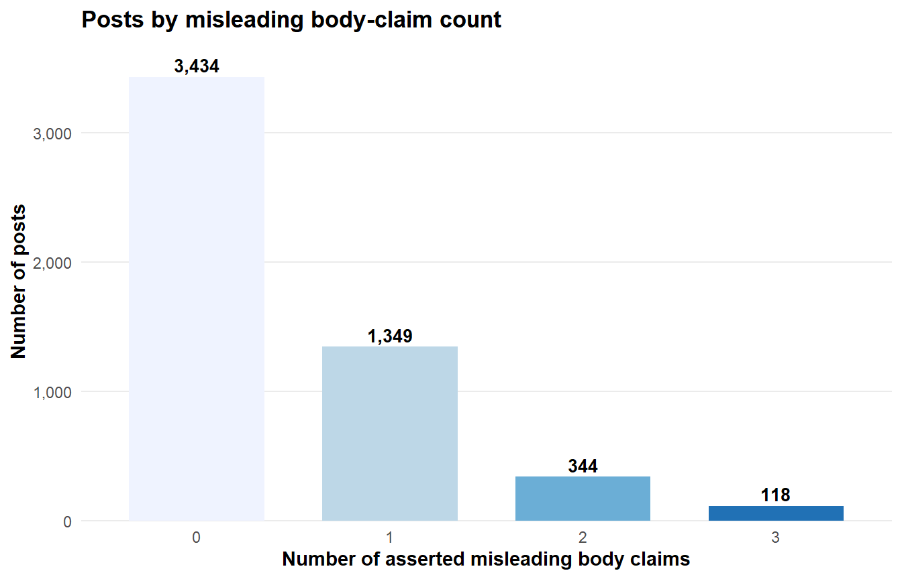
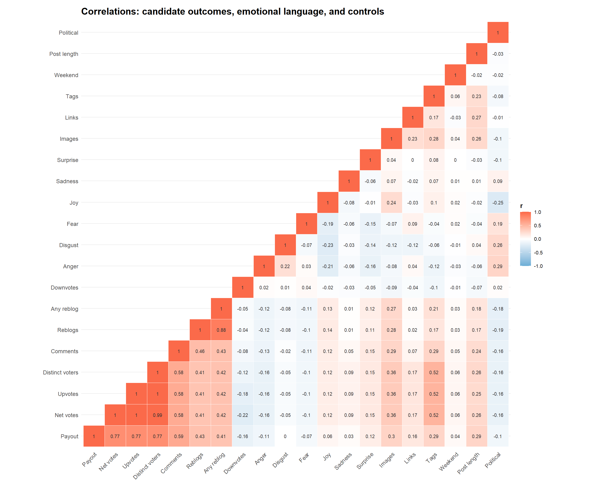
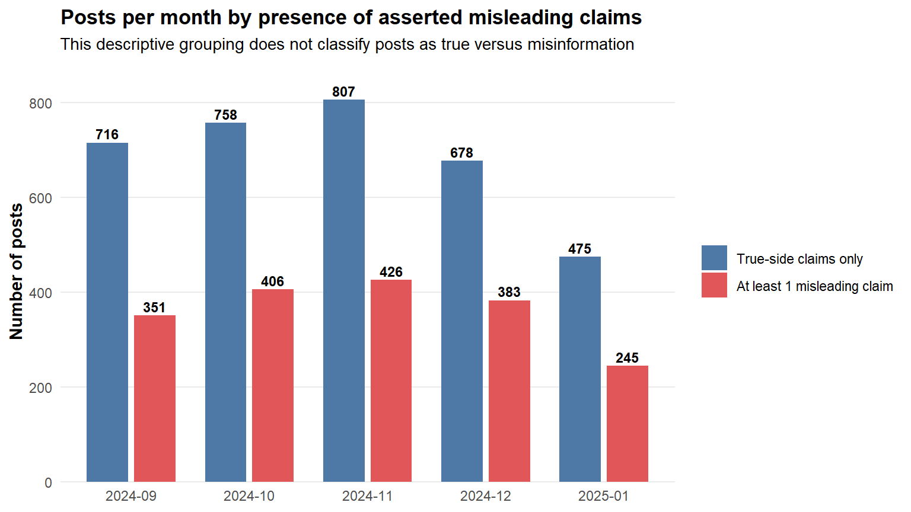
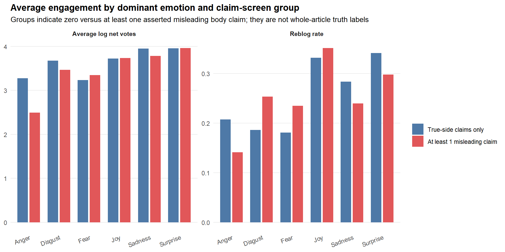
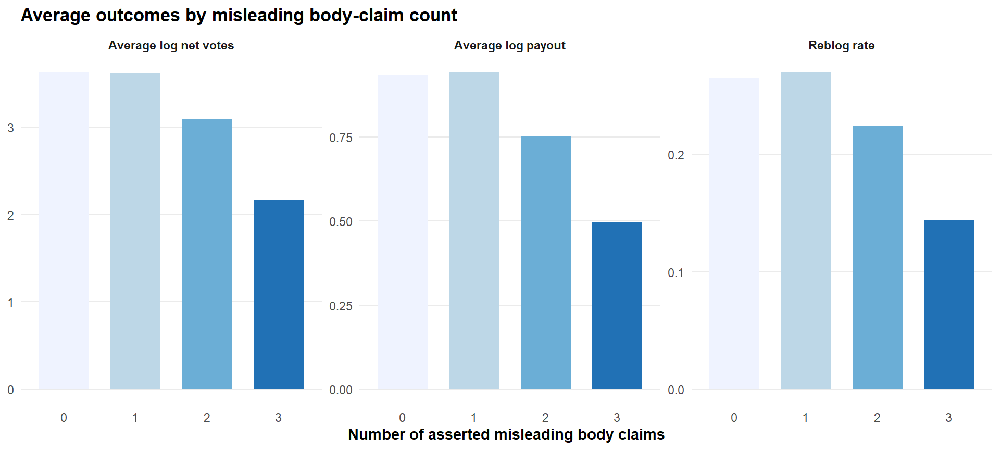
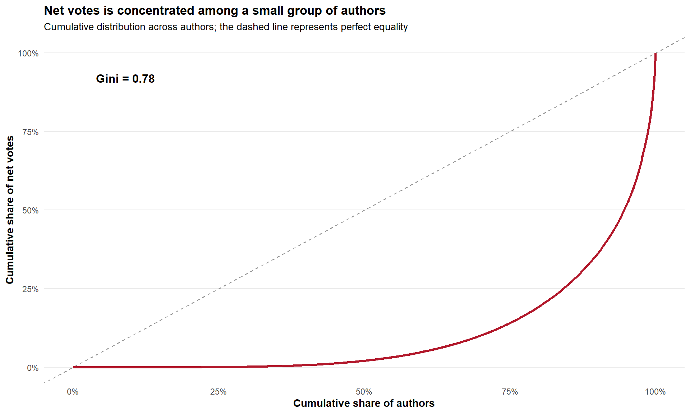
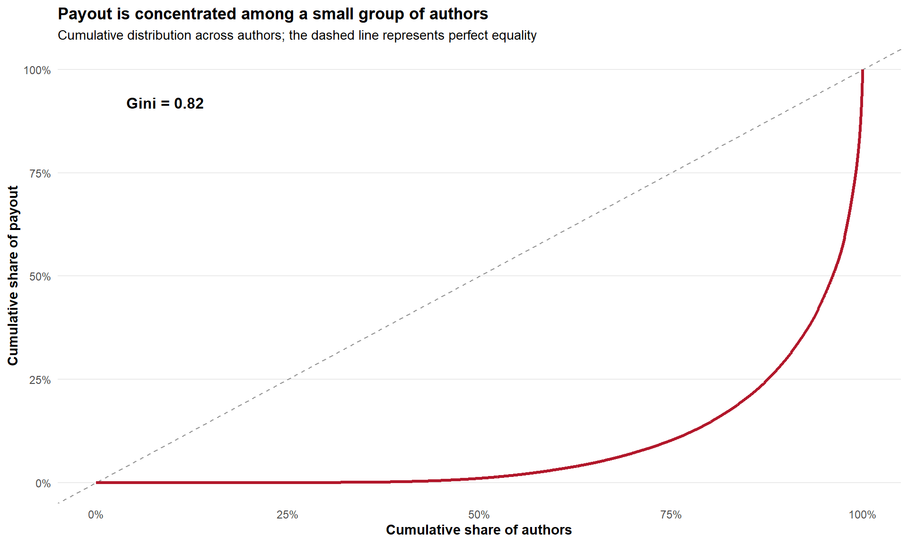
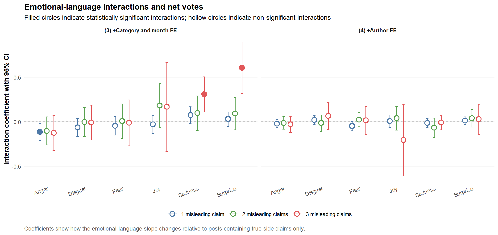

library(tidyverse)
library(arrow)
library(fixest)
library(modelsummary)
library(gt)
library(scales)
library(ggcorrplot)
library(broom)
library(forcats)
rm(list = ls())
set.seed(20260101)
options(encoding = "UTF-8")
base_dir <- "C:\\Users\\batuh\\PycharmProjects\\Thesis\\fact_checked_hive_pipeline"
data_path <- file.path(
base_dir,
"6. regression",
"hive_regression_dataset_main.parquet"
)
output_dir <- file.path(base_dir, "6. regression", "clean_regression_output")
pdf_dir <- file.path(output_dir, "pdf_tables")
html_dir <- file.path(output_dir, "html_tables")
fig_png_dir <- file.path(output_dir, "figures_png")
fig_pdf_dir <- file.path(output_dir, "figures_pdf")
dir.create(pdf_dir, recursive = TRUE, showWarnings = FALSE)
dir.create(html_dir, recursive = TRUE, showWarnings = FALSE)
dir.create(fig_png_dir, recursive = TRUE, showWarnings = FALSE)
dir.create(fig_pdf_dir, recursive = TRUE, showWarnings = FALSE)
if (!file.exists(data_path)) {
stop("Regression dataset not found: ", data_path)
}
# HC1 heteroskedasticity-robust standard errors.
se_main <- "hetero"
emotion_vars <- c(
"anger", "disgust", "fear", "joy", "sadness", "surprise"
)
emotion_labels <- c(
anger = "Anger",
disgust = "Disgust",
fear = "Fear",
joy = "Joy",
sadness = "Sadness",
surprise = "Surprise"
)
standing_vars <- c(
"log_pre_rewards",
"log_pre_curation",
"log_pre_posts",
"log_acct_age"
)
standing_labels <- c(
log_pre_rewards = "Pre-window cumulative author rewards",
log_pre_curation = "Pre-window cumulative curation rewards",
log_pre_posts = "Pre-window post count",
log_acct_age = "Pre-window account age"
)
control_terms <- c(
"log_len",
"is_political",
"log_images",
"log_links",
"log_tags",
"is_weekend"
)
controls <- paste(control_terms, collapse = " + ")
fe_main <- "category + month"
fe_author <- "category + month + author"
thesis_cols <- c(
"True-side claims only" = "#4E79A7",
"At least 1 misleading claim" = "#E15759"
)
interaction_cols <- c(
"1 misleading claim" = "#4E79A7",
"2 misleading claims" = "#59A14F",
"3 misleading claims" = "#E15759"
)
theme_thesis <- function(base_size = 11) {
theme_minimal(base_size = base_size) +
theme(
plot.title = element_text(face = "bold"),
plot.subtitle = element_text(size = rel(0.95)),
axis.title = element_text(face = "bold"),
legend.title = element_text(face = "bold"),
panel.grid.minor = element_blank(),
panel.grid.major.x = element_blank(),
strip.text = element_text(face = "bold")
)
}
save_plot_both <- function(plot_object, file_stub, width = 8, height = 5, dpi = 300) {
ggsave(
filename = file.path(fig_png_dir, paste0(file_stub, ".png")),
plot = plot_object,
width = width,
height = height,
dpi = dpi
)
ggsave(
filename = file.path(fig_pdf_dir, paste0(file_stub, ".pdf")),
plot = plot_object,
width = width,
height = height,
dpi = dpi,
device = cairo_pdf
)
}
# Set to FALSE to skip PDF table export entirely. This makes rendering the
# fastest it can be and fully avoids calling webshot2/Chrome, so the
# "... screenshot completed" progress text can never appear. HTML tables are
# still written and the inline tabbed tables still render.
export_table_pdf <- TRUE
# Run an expression while swallowing every side channel: standard output,
# messages, and warnings. webshot2 prints progress text such as
# "file:///... screenshot completed" while producing a PDF. Inside a
# results = "asis" block that text leaks into the document and breaks the gt
# HTML that follows it. Routing every gtsave call through this keeps the
# rendered output clean.
run_silently <- function(expr) {
tf <- tempfile()
con <- file(tf, open = "wt")
sink(con, type = "output")
sink(con, type = "message")
on.exit(
{
sink(type = "message")
sink(type = "output")
close(con)
unlink(tf)
},
add = TRUE
)
invisible(suppressMessages(suppressWarnings(force(expr))))
}
save_gt_table <- function(table_object, file_stub) {
html_path <- file.path(html_dir, paste0(file_stub, ".html"))
pdf_path <- file.path(pdf_dir, paste0(file_stub, ".pdf"))
run_silently(gt::gtsave(table_object, html_path))
if (isTRUE(export_table_pdf)) {
tryCatch(
run_silently(
gt::gtsave(
table_object,
pdf_path,
expand = 10,
vwidth = 1400
)
),
error = function(e) {
message(
"Could not export PDF ", basename(pdf_path), ". ",
"Install webshot2 and make sure Chrome/Chromium is available. ",
"Original error: ", conditionMessage(e)
)
}
)
}
invisible(table_object)
}
# PDF export through gt::gtsave requires webshot2 and Chrome/Chromium.
if (!requireNamespace("webshot2", quietly = TRUE)) {
message(
"PDF export requires webshot2. Install once with: ",
"install.packages('webshot2')"
)
}Study 1 (Hive): Clean Regression Analysis
This file produces a clean Study 1 analysis aligned with the latest supervision decisions. The main independent variable is the categorical number of asserted misleading body claims. The six DistilRoBERTa emotion dimensions are analysed separately. Title misinformation and payout are reported as robustness analyses. BH-FDR and joint Wald tests are intentionally omitted from this version.
0. Setup
1. Load and prepare the data
raw_data <- read_parquet(data_path) |>
as_tibble()
required_columns <- c(
"doc_id", "author",
"analysis_sample_body", "analysis_sample_title_robustness",
"misleading_claim_count", "title_misleading",
"net_votes", "reblogs", "payout",
"comments", "upvotes", "downvotes", "distinct_voters",
"log_len", "is_political", "category", "month",
"n_images", "n_links", "n_tags", "is_weekend",
emotion_vars,
standing_vars,
"pre_avg_reward", "log_pre_avg_reward"
)
missing_columns <- setdiff(required_columns, names(raw_data))
if (length(missing_columns) > 0) {
stop(
"The regression dataset is missing required columns: ",
paste(missing_columns, collapse = ", ")
)
}
z_score <- function(x) {
x <- as.numeric(x)
s <- sd(x, na.rm = TRUE)
if (is.na(s) || s == 0) return(rep(NA_real_, length(x)))
as.numeric((x - mean(x, na.rm = TRUE)) / s)
}
model_data <- raw_data |>
filter(analysis_sample_body %in% TRUE) |>
mutate(
misleading_claim_count = as.integer(misleading_claim_count),
misleading_n_f = factor(misleading_claim_count, levels = 0:3),
any_misleading_claim = as.integer(misleading_claim_count > 0),
claim_screen_group = factor(
if_else(
any_misleading_claim == 1,
"At least 1 misleading claim",
"True-side claims only"
),
levels = c("True-side claims only", "At least 1 misleading claim")
),
title_misleading = as.numeric(title_misleading),
net_votes = as.numeric(net_votes),
reblogs = as.numeric(reblogs),
payout = as.numeric(payout),
comments = as.numeric(comments),
upvotes = as.numeric(upvotes),
downvotes = as.numeric(downvotes),
distinct_voters = as.numeric(distinct_voters),
log_net_votes = log1p(pmax(net_votes, 0)),
log_reblogs = log1p(pmax(reblogs, 0)),
any_reblog = as.integer(reblogs > 0),
log_payout = log1p(pmax(payout, 0)),
log_comments = log1p(pmax(comments, 0)),
log_upvotes = log1p(pmax(upvotes, 0)),
log_downvotes = log1p(pmax(downvotes, 0)),
log_distinct_voters = log1p(pmax(distinct_voters, 0)),
log_len = as.numeric(log_len),
is_political = as.numeric(is_political),
log_images = log1p(pmax(as.numeric(n_images), 0)),
log_links = log1p(pmax(as.numeric(n_links), 0)),
log_tags = log1p(pmax(as.numeric(n_tags), 0)),
is_weekend = as.numeric(is_weekend),
category = factor(na_if(trimws(as.character(category)), "")),
month = factor(na_if(trimws(as.character(month)), "")),
month_chr = as.character(month),
author = factor(na_if(trimws(as.character(author)), "")),
across(all_of(emotion_vars), ~ as.numeric(.x)),
across(all_of(emotion_vars), ~ z_score(.x), .names = "{.col}_z"),
across(
any_of(c(standing_vars, "pre_avg_reward", "log_pre_avg_reward")),
~ as.numeric(.x)
)
)
invalid_counts <- setdiff(unique(na.omit(model_data$misleading_claim_count)), 0:3)
if (length(invalid_counts) > 0) {
stop(
"Unexpected misleading_claim_count values: ",
paste(invalid_counts, collapse = ", ")
)
}
standing_coverage <- model_data |>
summarise(
across(
all_of(standing_vars),
~ sum(!is.na(.x)),
.names = "nonmissing_{.col}"
)
)
if (any(unlist(standing_coverage) != nrow(model_data))) {
stop(
"Pre-window author-standing coverage is incomplete in the body-only ",
"main sample. Rebuild the dataset with build_regression_dataset_final.py."
)
}
# H1 samples do not depend on emotion availability.
h1_required <- c(
"misleading_n_f", control_terms,
"category", "month", "author"
)
h1_votes_data <- model_data |>
drop_na(all_of(c("log_net_votes", h1_required)))
h1_reblog_data <- model_data |>
drop_na(all_of(c("any_reblog", h1_required)))
h1_payout_data <- model_data |>
drop_na(all_of(c("log_payout", h1_required)))
get_h2_data <- function(outcome, emotion) {
model_data |>
drop_na(all_of(c(outcome, h1_required, paste0(emotion, "_z"))))
}
get_title_data <- function(outcome) {
base_data <- switch(
outcome,
log_net_votes = h1_votes_data,
any_reblog = h1_reblog_data,
log_payout = h1_payout_data,
stop("Unknown outcome: ", outcome)
)
base_data |>
filter(
analysis_sample_title_robustness %in% TRUE,
!is.na(title_misleading)
)
}
month_levels <- sort(unique(na.omit(model_data$month_chr)))
model_data <- model_data |>
mutate(month_f = factor(month_chr, levels = month_levels))
# Dominant emotion descriptive helper.
dominant_emotion_fun <- function(df, emotion_columns) {
mat <- as.matrix(df[, emotion_columns])
idx <- max.col(mat, ties.method = "first")
out <- emotion_columns[idx]
out[apply(mat, 1, function(x) all(is.na(x)))] <- NA_character_
out
}
model_data$dominant_emotion <- dominant_emotion_fun(
model_data,
emotion_vars
)
model_data <- model_data |>
mutate(
dominant_emotion = factor(
dominant_emotion,
levels = emotion_vars,
labels = unname(emotion_labels[emotion_vars])
)
)1.1 Sample audit
audit_table <- tibble(
Metric = c(
"Posts in body-only main sample",
"Posts in title robustness sample",
"Authors in body-only sample",
"Posts with negative net votes",
"Posts with comments available",
"Posts with upvotes available",
"Posts with downvotes available",
"Posts with distinct voters available",
"Posts with complete pre-window standing"
),
Value = c(
nrow(model_data),
sum(model_data$analysis_sample_title_robustness %in% TRUE, na.rm = TRUE),
n_distinct(model_data$author),
sum(model_data$net_votes < 0, na.rm = TRUE),
sum(!is.na(model_data$comments)),
sum(!is.na(model_data$upvotes)),
sum(!is.na(model_data$downvotes)),
sum(!is.na(model_data$distinct_voters)),
sum(complete.cases(model_data[, standing_vars]))
)
)
audit_table2. Descriptive statistics and figures
These analyses are descriptive. The formal tests of H1 and H2 are the regression models below.
2.1 Distribution of posts by misleading-claim count
p_claim_count <- model_data |>
count(misleading_claim_count) |>
ggplot(aes(x = factor(misleading_claim_count), y = n, fill = factor(misleading_claim_count))) +
geom_col(width = 0.7, show.legend = FALSE) +
geom_text(aes(label = comma(n)), vjust = -0.35, fontface = "bold", size = 3.6) +
scale_y_continuous(labels = comma, expand = expansion(mult = c(0, 0.08))) +
scale_fill_brewer(palette = "Blues") +
labs(
title = "Posts by misleading body-claim count",
x = "Number of asserted misleading body claims",
y = "Number of posts"
) +
theme_thesis(11)
save_plot_both(p_claim_count, "D1_posts_by_claim_count", 7, 4.5)
p_claim_count
2.2 Candidate dependent variables by misleading-claim category
These descriptives do not classify entire posts as true or misinformation. The four groups refer only to the number of asserted misleading body claims identified among the classified extracted claims. The pairwise Welch tests compare one, two, and three misleading claims separately with the zero-claim reference group, matching the categorical structure of the regressions.
claim_category_means <- function(data, vars, labels) {
map_dfr(vars, function(v) {
d <- data |>
transmute(
misleading_claim_count,
value = as.numeric(.data[[v]])
) |>
filter(
misleading_claim_count %in% 0:3,
is.finite(value)
)
tibble(
Variable = v,
Label = unname(labels[[v]]),
`Mean: 0 claims` = mean(d$value[d$misleading_claim_count == 0]),
`Mean: 1 claim` = mean(d$value[d$misleading_claim_count == 1]),
`Mean: 2 claims` = mean(d$value[d$misleading_claim_count == 2]),
`Mean: 3 claims` = mean(d$value[d$misleading_claim_count == 3]),
`N: 0 claims` = sum(d$misleading_claim_count == 0),
`N: 1 claim` = sum(d$misleading_claim_count == 1),
`N: 2 claims` = sum(d$misleading_claim_count == 2),
`N: 3 claims` = sum(d$misleading_claim_count == 3)
)
})
}
claim_pairwise_ttests <- function(data, vars, labels) {
map_dfr(vars, function(v) {
d <- data |>
transmute(
misleading_claim_count,
value = as.numeric(.data[[v]])
) |>
filter(
misleading_claim_count %in% 0:3,
is.finite(value)
)
reference <- d$value[d$misleading_claim_count == 0]
map_dfr(1:3, function(claim_level) {
comparison <- d$value[d$misleading_claim_count == claim_level]
if (length(reference) < 2 || length(comparison) < 2) {
return(NULL)
}
test <- t.test(comparison, reference)
tibble(
Variable = v,
Label = unname(labels[[v]]),
Comparison = paste0(claim_level, " vs 0 claims"),
Difference = mean(comparison) - mean(reference),
`t statistic` = unname(test$statistic),
`p-value` = test$p.value,
`CI low` = test$conf.int[1],
`CI high` = test$conf.int[2],
`N: comparison` = length(comparison),
`N: 0 claims` = length(reference)
)
})
})
}2.2.1 All potential dependent variables
dv_candidates <- c(
log_payout = "Payout",
log_net_votes = "Net votes",
log_comments = "Comments",
log_reblogs = "Reblogs (log count)",
any_reblog = "Any reblog",
log_downvotes = "Downvotes",
log_distinct_voters = "Distinct voters",
log_upvotes = "Upvotes"
)
available_dv <- names(dv_candidates)[
names(dv_candidates) %in% names(model_data)
]
dv_category_means <- claim_category_means(
model_data,
available_dv,
dv_candidates
)
dv_category_means_gt <- dv_category_means |>
select(-Variable) |>
gt() |>
fmt_number(columns = starts_with("Mean:"), decimals = 3) |>
fmt_integer(columns = starts_with("N:")) |>
tab_header(
title = "Table D1A. Candidate dependent-variable means by misleading-claim category"
) |>
tab_source_note(
md(
"Note. Zero claims is not labelled as a true or fully accurate article. It means that none of the classified asserted claims extracted from the post were coded as misleading."
)
)
dv_category_means_gt| Table D1A. Candidate dependent-variable means by misleading-claim category | ||||||||
| Label | Mean: 0 claims | Mean: 1 claim | Mean: 2 claims | Mean: 3 claims | N: 0 claims | N: 1 claim | N: 2 claims | N: 3 claims |
|---|---|---|---|---|---|---|---|---|
| Payout | 0.934 | 0.943 | 0.753 | 0.498 | 3,434 | 1,349 | 344 | 118 |
| Net votes | 3.629 | 3.622 | 3.087 | 2.167 | 3,434 | 1,349 | 344 | 118 |
| Comments | 1.072 | 1.136 | 0.970 | 0.620 | 3,434 | 1,349 | 344 | 118 |
| Reblogs (log count) | 0.270 | 0.258 | 0.191 | 0.116 | 3,434 | 1,349 | 344 | 118 |
| Any reblog | 0.265 | 0.270 | 0.224 | 0.144 | 3,434 | 1,349 | 344 | 118 |
| Downvotes | 0.109 | 0.106 | 0.120 | 0.066 | 3,434 | 1,349 | 344 | 118 |
| Distinct voters | 3.728 | 3.719 | 3.212 | 2.261 | 3,434 | 1,349 | 344 | 118 |
| Upvotes | 3.697 | 3.688 | 3.174 | 2.243 | 3,434 | 1,349 | 344 | 118 |
| Note. Zero claims is not labelled as a true or fully accurate article. It means that none of the classified asserted claims extracted from the post were coded as misleading. | ||||||||
save_gt_table(
dv_category_means_gt,
"Table_D1A_candidate_DV_means_by_claim_category"
)dv_pairwise_tests <- claim_pairwise_ttests(
model_data,
available_dv,
dv_candidates
)
dv_pairwise_tests_gt <- dv_pairwise_tests |>
select(-Variable) |>
gt(groupname_col = "Label") |>
fmt_number(
columns = c(Difference, `t statistic`, `p-value`, `CI low`, `CI high`),
decimals = 3
) |>
fmt_integer(columns = starts_with("N:")) |>
tab_header(
title = "Table D1B. Welch t-tests: each misleading-claim category versus zero claims"
) |>
tab_source_note(
md(
"Note. Each comparison is estimated separately: one versus zero, two versus zero, and three versus zero misleading asserted body claims. These are descriptive tests; the regression models provide the main inference."
)
)
dv_pairwise_tests_gt| Table D1B. Welch t-tests: each misleading-claim category versus zero claims | |||||||
| Comparison | Difference | t statistic | p-value | CI low | CI high | N: comparison | N: 0 claims |
|---|---|---|---|---|---|---|---|
| Payout | |||||||
| 1 vs 0 claims | 0.009 | 0.308 | 0.758 | −0.049 | 0.068 | 1,349 | 3,434 |
| 2 vs 0 claims | −0.181 | −3.506 | 0.001 | −0.282 | −0.079 | 344 | 3,434 |
| 3 vs 0 claims | −0.436 | −5.808 | 0.000 | −0.585 | −0.287 | 118 | 3,434 |
| Net votes | |||||||
| 1 vs 0 claims | −0.007 | −0.116 | 0.908 | −0.130 | 0.115 | 1,349 | 3,434 |
| 2 vs 0 claims | −0.543 | −4.611 | 0.000 | −0.774 | −0.311 | 344 | 3,434 |
| 3 vs 0 claims | −1.462 | −7.729 | 0.000 | −1.837 | −1.088 | 118 | 3,434 |
| Comments | |||||||
| 1 vs 0 claims | 0.065 | 1.905 | 0.057 | −0.002 | 0.131 | 1,349 | 3,434 |
| 2 vs 0 claims | −0.102 | −1.671 | 0.096 | −0.221 | 0.018 | 344 | 3,434 |
| 3 vs 0 claims | −0.452 | −5.247 | 0.000 | −0.622 | −0.282 | 118 | 3,434 |
| Reblogs (log count) | |||||||
| 1 vs 0 claims | −0.012 | −0.744 | 0.457 | −0.043 | 0.019 | 1,349 | 3,434 |
| 2 vs 0 claims | −0.078 | −3.493 | 0.001 | −0.123 | −0.034 | 344 | 3,434 |
| 3 vs 0 claims | −0.154 | −5.250 | 0.000 | −0.211 | −0.096 | 118 | 3,434 |
| Any reblog | |||||||
| 1 vs 0 claims | 0.005 | 0.319 | 0.750 | −0.023 | 0.032 | 1,349 | 3,434 |
| 2 vs 0 claims | −0.041 | −1.747 | 0.081 | −0.088 | 0.005 | 344 | 3,434 |
| 3 vs 0 claims | −0.121 | −3.637 | 0.000 | −0.187 | −0.055 | 118 | 3,434 |
| Downvotes | |||||||
| 1 vs 0 claims | −0.002 | −0.224 | 0.822 | −0.023 | 0.019 | 1,349 | 3,434 |
| 2 vs 0 claims | 0.011 | 0.576 | 0.565 | −0.027 | 0.049 | 344 | 3,434 |
| 3 vs 0 claims | −0.043 | −2.028 | 0.045 | −0.085 | −0.001 | 118 | 3,434 |
| Distinct voters | |||||||
| 1 vs 0 claims | −0.009 | −0.153 | 0.879 | −0.125 | 0.107 | 1,349 | 3,434 |
| 2 vs 0 claims | −0.516 | −4.624 | 0.000 | −0.735 | −0.297 | 344 | 3,434 |
| 3 vs 0 claims | −1.468 | −7.948 | 0.000 | −1.833 | −1.102 | 118 | 3,434 |
| Upvotes | |||||||
| 1 vs 0 claims | −0.009 | −0.142 | 0.887 | −0.127 | 0.110 | 1,349 | 3,434 |
| 2 vs 0 claims | −0.522 | −4.582 | 0.000 | −0.747 | −0.298 | 344 | 3,434 |
| 3 vs 0 claims | −1.454 | −7.823 | 0.000 | −1.822 | −1.086 | 118 | 3,434 |
| Note. Each comparison is estimated separately: one versus zero, two versus zero, and three versus zero misleading asserted body claims. These are descriptive tests; the regression models provide the main inference. | |||||||
save_gt_table(
dv_pairwise_tests_gt,
"Table_D1B_candidate_DV_pairwise_t_tests"
)2.2.2 Six discrete emotional-language dimensions
emotion_category_means <- claim_category_means(
model_data,
emotion_vars,
emotion_labels
)
emotion_category_means_gt <- emotion_category_means |>
select(-Variable) |>
gt() |>
fmt_number(columns = starts_with("Mean:"), decimals = 3) |>
fmt_integer(columns = starts_with("N:")) |>
tab_header(
title = "Table D2A. Emotional-language means by misleading-claim category"
) |>
tab_source_note(
md(
"Note. The six DistilRoBERTa emotional-language dimensions are shown separately."
)
)
emotion_category_means_gt| Table D2A. Emotional-language means by misleading-claim category | ||||||||
| Label | Mean: 0 claims | Mean: 1 claim | Mean: 2 claims | Mean: 3 claims | N: 0 claims | N: 1 claim | N: 2 claims | N: 3 claims |
|---|---|---|---|---|---|---|---|---|
| Anger | 0.086 | 0.103 | 0.135 | 0.188 | 3,434 | 1,349 | 344 | 118 |
| Disgust | 0.069 | 0.084 | 0.124 | 0.146 | 3,434 | 1,349 | 344 | 118 |
| Fear | 0.117 | 0.114 | 0.120 | 0.119 | 3,434 | 1,349 | 344 | 118 |
| Joy | 0.108 | 0.088 | 0.051 | 0.033 | 3,434 | 1,349 | 344 | 118 |
| Sadness | 0.073 | 0.068 | 0.059 | 0.041 | 3,434 | 1,349 | 344 | 118 |
| Surprise | 0.079 | 0.092 | 0.067 | 0.048 | 3,434 | 1,349 | 344 | 118 |
| Note. The six DistilRoBERTa emotional-language dimensions are shown separately. | ||||||||
save_gt_table(
emotion_category_means_gt,
"Table_D2A_emotion_means_by_claim_category"
)emotion_pairwise_tests <- claim_pairwise_ttests(
model_data,
emotion_vars,
emotion_labels
)
emotion_pairwise_tests_gt <- emotion_pairwise_tests |>
select(-Variable) |>
gt(groupname_col = "Label") |>
fmt_number(
columns = c(Difference, `t statistic`, `p-value`, `CI low`, `CI high`),
decimals = 3
) |>
fmt_integer(columns = starts_with("N:")) |>
tab_header(
title = "Table D2B. Emotional-language Welch t-tests versus zero claims"
) |>
tab_source_note(
md(
"Note. One-, two-, and three-claim groups are each compared separately with the zero-claim reference group."
)
)
emotion_pairwise_tests_gt| Table D2B. Emotional-language Welch t-tests versus zero claims | |||||||
| Comparison | Difference | t statistic | p-value | CI low | CI high | N: comparison | N: 0 claims |
|---|---|---|---|---|---|---|---|
| Anger | |||||||
| 1 vs 0 claims | 0.017 | 3.475 | 0.001 | 0.008 | 0.027 | 1,349 | 3,434 |
| 2 vs 0 claims | 0.049 | 5.327 | 0.000 | 0.031 | 0.068 | 344 | 3,434 |
| 3 vs 0 claims | 0.102 | 5.787 | 0.000 | 0.067 | 0.137 | 118 | 3,434 |
| Disgust | |||||||
| 1 vs 0 claims | 0.015 | 3.328 | 0.001 | 0.006 | 0.024 | 1,349 | 3,434 |
| 2 vs 0 claims | 0.055 | 5.752 | 0.000 | 0.036 | 0.074 | 344 | 3,434 |
| 3 vs 0 claims | 0.077 | 4.418 | 0.000 | 0.042 | 0.111 | 118 | 3,434 |
| Fear | |||||||
| 1 vs 0 claims | −0.003 | −0.500 | 0.617 | −0.016 | 0.009 | 1,349 | 3,434 |
| 2 vs 0 claims | 0.004 | 0.315 | 0.753 | −0.019 | 0.026 | 344 | 3,434 |
| 3 vs 0 claims | 0.002 | 0.114 | 0.910 | −0.034 | 0.039 | 118 | 3,434 |
| Joy | |||||||
| 1 vs 0 claims | −0.020 | −3.538 | 0.000 | −0.031 | −0.009 | 1,349 | 3,434 |
| 2 vs 0 claims | −0.058 | −8.008 | 0.000 | −0.072 | −0.043 | 344 | 3,434 |
| 3 vs 0 claims | −0.075 | −8.886 | 0.000 | −0.092 | −0.058 | 118 | 3,434 |
| Sadness | |||||||
| 1 vs 0 claims | −0.005 | −1.136 | 0.256 | −0.014 | 0.004 | 1,349 | 3,434 |
| 2 vs 0 claims | −0.014 | −2.150 | 0.032 | −0.027 | −0.001 | 344 | 3,434 |
| 3 vs 0 claims | −0.032 | −3.241 | 0.002 | −0.051 | −0.012 | 118 | 3,434 |
| Surprise | |||||||
| 1 vs 0 claims | 0.013 | 2.626 | 0.009 | 0.003 | 0.022 | 1,349 | 3,434 |
| 2 vs 0 claims | −0.012 | −1.742 | 0.082 | −0.025 | 0.002 | 344 | 3,434 |
| 3 vs 0 claims | −0.031 | −3.973 | 0.000 | −0.046 | −0.015 | 118 | 3,434 |
| Note. One-, two-, and three-claim groups are each compared separately with the zero-claim reference group. | |||||||
save_gt_table(
emotion_pairwise_tests_gt,
"Table_D2B_emotion_pairwise_t_tests"
)2.3 Correlation matrix
The categorical misleading-claim predictor is intentionally omitted from the Pearson correlation matrix. Treating the values 0, 1, 2, and 3 as a single continuous scale would impose a linear and equal-distance relationship that the regression design does not assume.
corr_candidates <- model_data |>
transmute(
Payout = log_payout,
`Net votes` = log_net_votes,
Upvotes = log_upvotes,
`Distinct voters` = log_distinct_voters,
Comments = log_comments,
Reblogs = log_reblogs,
`Any reblog` = any_reblog,
Downvotes = log_downvotes,
Anger = anger,
Disgust = disgust,
Fear = fear,
Joy = joy,
Sadness = sadness,
Surprise = surprise,
Images = log_images,
Links = log_links,
Tags = log_tags,
Weekend = is_weekend,
`Post length` = log_len,
Political = is_political
) |>
mutate(across(everything(), as.numeric))
# Remove variables that are completely missing or have no variation.
valid_corr_vars <- names(corr_candidates)[
map_lgl(
corr_candidates,
~ sum(!is.na(.x)) > 1 &&
sd(.x, na.rm = TRUE) > 0
)
]
corr_candidates <- corr_candidates |>
select(all_of(valid_corr_vars))
M <- cor(
corr_candidates,
use = "pairwise.complete.obs"
)
p_corr <- ggcorrplot(
M,
type = "lower", # Avoid repeating the same correlations twice
show.diag = TRUE,
lab = TRUE,
lab_size = 2.7,
lab_col = "grey20",
tl.cex = 10,
tl.srt = 45,
colors = c("#6BAED6", "white", "#FB6A4A"),
outline.color = "white",
legend.title = "r",
title = "Correlations: candidate outcomes, emotional language, and controls"
) +
coord_fixed() +
theme_thesis(10) +
theme(
axis.title = element_blank(),
axis.text.x = element_text(
angle = 45,
hjust = 1,
vjust = 1,
size = 9
),
axis.text.y = element_text(
size = 9
),
plot.title = element_text(
face = "bold",
size = 15,
hjust = 0
),
plot.margin = margin(
t = 12,
r = 18,
b = 28,
l = 18
),
legend.position = "right"
)
save_plot_both(
p_corr,
"D3_correlations_matrix",
width = 13,
height = 11
)
p_corr
2.4 Posts per month by claim-screen group
mon <- model_data |>
count(month_f, claim_screen_group)
p_month_counts <- ggplot(mon, aes(month_f, n, fill = claim_screen_group)) +
geom_col(position = position_dodge(width = 0.8), width = 0.7) +
geom_text(
aes(label = comma(n)),
position = position_dodge(width = 0.8),
vjust = -0.35,
fontface = "bold",
size = 3.2
) +
scale_fill_manual(values = thesis_cols, name = NULL) +
scale_y_continuous(labels = comma, expand = expansion(mult = c(0, 0.1))) +
labs(
title = "Posts per month by presence of asserted misleading claims",
subtitle = "This descriptive grouping does not classify posts as true versus misinformation",
x = NULL,
y = "Number of posts"
) +
theme_thesis(11)
save_plot_both(p_month_counts, "D4_posts_by_month_grouped", 8, 4.5)
p_month_counts
2.5 Average engagement by dominant emotion and claim-screen group
dom_emotion_plot_data <- model_data |>
filter(!is.na(dominant_emotion)) |>
group_by(dominant_emotion, claim_screen_group) |>
summarise(
mean_log_net_votes = mean(log_net_votes, na.rm = TRUE),
reblog_rate = mean(any_reblog, na.rm = TRUE),
n = n(),
.groups = "drop"
) |>
pivot_longer(
cols = c(mean_log_net_votes, reblog_rate),
names_to = "metric",
values_to = "value"
) |>
mutate(
metric = recode(
metric,
mean_log_net_votes = "Average log net votes",
reblog_rate = "Reblog rate"
)
)
p_dom_emotion <- ggplot(
dom_emotion_plot_data,
aes(dominant_emotion, value, fill = claim_screen_group)
) +
geom_col(position = position_dodge(width = 0.8), width = 0.7) +
facet_wrap(~ metric, scales = "free_y") +
scale_fill_manual(values = thesis_cols, name = NULL) +
labs(
title = "Average engagement by dominant emotion and claim-screen group",
subtitle = "Groups indicate zero versus at least one asserted misleading body claim; they are not whole-article truth labels",
x = NULL,
y = NULL
) +
theme_thesis(11) +
theme(axis.text.x = element_text(angle = 20, hjust = 1))
save_plot_both(p_dom_emotion, "D5_engagement_by_dominant_emotion_and_claim_group", 10, 5)
p_dom_emotion
2.6 Additional descriptive figure: outcomes by misleading-claim count
outcomes_by_claim <- model_data |>
group_by(misleading_claim_count) |>
summarise(
`Average log net votes` = mean(log_net_votes, na.rm = TRUE),
`Reblog rate` = mean(any_reblog, na.rm = TRUE),
`Average log payout` = mean(log_payout, na.rm = TRUE),
.groups = "drop"
) |>
pivot_longer(
cols = -misleading_claim_count,
names_to = "metric",
values_to = "value"
)
p_outcomes_by_claim <- ggplot(
outcomes_by_claim,
aes(factor(misleading_claim_count), value, fill = factor(misleading_claim_count))
) +
geom_col(show.legend = FALSE, width = 0.7) +
facet_wrap(~ metric, scales = "free_y") +
scale_fill_brewer(palette = "Blues") +
labs(
title = "Average outcomes by misleading body-claim count",
x = "Number of asserted misleading body claims",
y = NULL
) +
theme_thesis(11)
save_plot_both(p_outcomes_by_claim, "D6_outcomes_by_claim_count", 10, 4.5)
p_outcomes_by_claim
calculate_concentration <- function(data, outcome, outcome_label) {
author_totals <- data |>
group_by(author) |>
summarise(
value = sum(
pmax(.data[[outcome]], 0),
na.rm = TRUE
),
n_posts = n(),
.groups = "drop"
) |>
arrange(value)
total_value <- sum(author_totals$value, na.rm = TRUE)
n_authors <- nrow(author_totals)
if (n_authors == 0 || total_value <= 0) {
stop(
paste0(
"Gini cannot be calculated for ",
outcome_label,
" because there are no positive values."
)
)
}
gini <- (
2 * sum(seq_len(n_authors) * author_totals$value) /
(n_authors * total_value)
) -
(n_authors + 1) / n_authors
lorenz_data <- author_totals |>
mutate(
cumulative_authors = row_number() / n_authors,
cumulative_value = cumsum(value) / total_value
) |>
add_row(
author = NA_character_,
value = 0,
n_posts = 0,
cumulative_authors = 0,
cumulative_value = 0,
.before = 1
)
plot <- ggplot(
lorenz_data,
aes(
x = cumulative_authors,
y = cumulative_value
)
) +
geom_abline(
slope = 1,
intercept = 0,
linetype = "dashed",
colour = "grey60"
) +
geom_line(
colour = "#B2182B",
linewidth = 1.1
) +
annotate(
"text",
x = 0.04,
y = 0.92,
hjust = 0,
label = sprintf("Gini = %.2f", gini),
fontface = "bold",
size = 4.2
) +
scale_x_continuous(
labels = scales::percent,
limits = c(0, 1)
) +
scale_y_continuous(
labels = scales::percent,
limits = c(0, 1)
) +
labs(
title = paste0(
outcome_label,
" is concentrated among a small group of authors"
),
subtitle = paste0(
"Cumulative distribution across authors; ",
"the dashed line represents perfect equality"
),
x = "Cumulative share of authors",
y = paste(
"Cumulative share of",
tolower(outcome_label)
)
) +
theme_thesis(11)
list(
gini = gini,
author_totals = author_totals,
lorenz_data = lorenz_data,
plot = plot
)
}net_vote_concentration <- calculate_concentration(
model_data,
"net_votes",
"Net votes"
)
payout_concentration <- calculate_concentration(
model_data,
"payout",
"Payout"
)
# Print Gini coefficients
net_vote_concentration$gini[1] 0.783364payout_concentration$gini[1] 0.8233768# Create an output folder
dir.create(
"figures",
showWarnings = FALSE,
recursive = TRUE
)
# Save as high-resolution PNG files
ggsave(
filename = "figures/D8_net_votes_author_concentration.png",
plot = net_vote_concentration$plot,
width = 10,
height = 6,
dpi = 300,
bg = "white"
)
ggsave(
filename = "figures/D9_payout_author_concentration.png",
plot = payout_concentration$plot,
width = 10,
height = 6,
dpi = 300,
bg = "white"
)
# Display plots in the document
net_vote_concentration$plot
payout_concentration$plot
3. Regression and export helpers
fit_model <- function(outcome, rhs, data, fixed_effects = NULL) {
formula_text <- paste0(
outcome,
" ~ ",
rhs,
if (!is.null(fixed_effects)) paste0(" | ", fixed_effects) else ""
)
feols(
fml = as.formula(formula_text),
data = data,
vcov = se_main,
notes = FALSE
)
}
fit_main_ladder <- function(outcome, focal_terms, data) {
list(
"(1) Body only" = fit_model(outcome, focal_terms, data),
"(2) + controls" = fit_model(outcome, paste(focal_terms, controls, sep = " + "), data),
"(3) + category/month FE" = fit_model(outcome, paste(focal_terms, controls, sep = " + "), data, fe_main),
"(4) + author FE" = fit_model(outcome, paste(focal_terms, controls, sep = " + "), data, fe_author)
)
}
fit_title_ladder <- function(outcome, data) {
list(
"(1) Body only" = fit_model(outcome, "misleading_n_f", data),
"(2) + title" = fit_model(outcome, "misleading_n_f + title_misleading", data),
"(3) + controls" = fit_model(
outcome,
paste("misleading_n_f + title_misleading", controls, sep = " + "),
data
),
"(4) + category/month FE" = fit_model(
outcome,
paste("misleading_n_f + title_misleading", controls, sep = " + "),
data,
fe_main
),
"(5) + author FE" = fit_model(
outcome,
paste("misleading_n_f + title_misleading", controls, sep = " + "),
data,
fe_author
)
)
}
control_coef_map <- c(
"log_len" = "Log post length",
"is_political" = "Political post",
"log_images" = "Log number of images",
"log_links" = "Log number of links",
"log_tags" = "Log number of tags",
"is_weekend" = "Weekend post"
)
h1_coef_map <- c(
"misleading_n_f1" = "1 misleading claim",
"misleading_n_f2" = "2 misleading claims",
"misleading_n_f3" = "3 misleading claims",
control_coef_map
)
title_coef_map <- c(
"misleading_n_f1" = "1 misleading claim",
"misleading_n_f2" = "2 misleading claims",
"misleading_n_f3" = "3 misleading claims",
"title_misleading" = "Misleading title",
control_coef_map
)
emotion_coef_map <- function(emotion) {
emotion_z <- paste0(emotion, "_z")
emotion_label <- emotion_labels[[emotion]]
c(
"misleading_n_f1" = "1 misleading claim",
"misleading_n_f2" = "2 misleading claims",
"misleading_n_f3" = "3 misleading claims",
setNames(paste0(emotion_label, " (z)"), emotion_z),
setNames(paste0("1 claim x ", emotion_label), paste0("misleading_n_f1:", emotion_z)),
setNames(paste0("2 claims x ", emotion_label), paste0("misleading_n_f2:", emotion_z)),
setNames(paste0("3 claims x ", emotion_label), paste0("misleading_n_f3:", emotion_z)),
control_coef_map
)
}
specification_rows <- function(model_names, title_model = FALSE) {
k <- length(model_names)
if (title_model) {
post_controls <- c("No", "No", "Yes", "Yes", "Yes")
category_fe <- c("No", "No", "No", "Yes", "Yes")
month_fe <- c("No", "No", "No", "Yes", "Yes")
author_fe <- c("No", "No", "No", "No", "Yes")
} else {
post_controls <- c("No", "Yes", "Yes", "Yes")
category_fe <- c("No", "No", "Yes", "Yes")
month_fe <- c("No", "No", "Yes", "Yes")
author_fe <- c("No", "No", "No", "Yes")
}
rows <- tibble(term = c("Post controls", "Category fixed effects", "Month fixed effects", "Author fixed effects"))
for (i in seq_along(model_names)) {
rows[[model_names[i]]] <- c(post_controls[i], category_fe[i], month_fe[i], author_fe[i])
}
rows
}
make_regression_table <- function(models, coef_map, title, note, file_stub,
title_model = FALSE, spec_rows = NULL) {
model_names <- names(models)
if (is.null(spec_rows)) {
spec_rows <- specification_rows(model_names, title_model)
}
table_object <- modelsummary(
models,
stars = c("+" = 0.10, "*" = 0.05, "**" = 0.01, "***" = 0.001),
coef_map = coef_map,
statistic = "({std.error})",
fmt = 3,
gof_map = tribble(
~raw, ~clean, ~fmt,
"nobs", "Num. Obs.", 0,
"r.squared", "R-squared", 3,
"r2.within", "Within R-squared", 3
),
add_rows = spec_rows,
output = "gt",
title = title,
escape = FALSE
) |>
tab_source_note(source_note = md(note)) |>
tab_source_note(source_note = md(
"Notes: + p < 0.10; * p < 0.05; ** p < 0.01; *** p < 0.001. HC1 heteroskedasticity-robust standard errors in parentheses."
)) |>
tab_options(
table.font.size = px(11),
data_row.padding = px(3),
heading.title.font.size = px(15),
heading.title.font.weight = "bold",
column_labels.font.weight = "bold"
)
save_gt_table(table_object, file_stub)
table_object
}4. H1: Misleading claims and engagement
The reference category is zero misleading body claims among posts with at least one classified asserted body claim.
4.1 Net votes
h1_votes_models <- fit_main_ladder("log_net_votes", "misleading_n_f", h1_votes_data)
make_regression_table(
h1_votes_models,
h1_coef_map,
"Table 1A. Misleading claims and net votes",
paste0(
"The dependent variable is log(1 + max(net votes, 0)). Post controls are log post length, political-post status, log images, log links, log tags, and weekend posting. Individual category, month, and author coefficients are absorbed and are therefore reported as fixed-effect indicators rather than printed separately."
),
"Table_1A_H1_net_votes"
)| (1) Body only | (2) + controls | (3) + category/month FE | (4) + author FE | |
|---|---|---|---|---|
| 1 misleading claim | -0.007 | 0.026 | 0.043 | -0.036 |
| (0.063) | (0.052) | (0.052) | (0.028) | |
| 2 misleading claims | -0.543*** | -0.240* | -0.206* | 0.026 |
| (0.118) | (0.096) | (0.096) | (0.047) | |
| 3 misleading claims | -1.462*** | -0.571*** | -0.501*** | 0.068 |
| (0.189) | (0.142) | (0.148) | (0.075) | |
| Log post length | 0.234*** | 0.247*** | 0.066* | |
| (0.030) | (0.031) | (0.027) | ||
| Political post | -0.369*** | |||
| (0.045) | ||||
| Log number of images | 0.410*** | 0.363*** | 0.130*** | |
| (0.026) | (0.028) | (0.038) | ||
| Log number of links | 0.047* | 0.046* | 0.064* | |
| (0.022) | (0.023) | (0.027) | ||
| Log number of tags | 1.598*** | 1.565*** | 0.090+ | |
| (0.054) | (0.054) | (0.052) | ||
| Weekend post | 0.130** | 0.129* | 0.051+ | |
| (0.050) | (0.050) | (0.026) | ||
| Num. Obs. | 5245 | 5245 | 5245 | 4304 |
| R-squared | 0.016 | 0.345 | 0.359 | 0.891 |
| Within R-squared | 0.297 | 0.016 | ||
| Post controls | No | Yes | Yes | Yes |
| Category fixed effects | No | No | Yes | Yes |
| Month fixed effects | No | No | Yes | Yes |
| Author fixed effects | No | No | No | Yes |
| + p < 0.1, * p < 0.05, ** p < 0.01, *** p < 0.001 | ||||
| The dependent variable is log(1 + max(net votes, 0)). Post controls are log post length, political-post status, log images, log links, log tags, and weekend posting. Individual category, month, and author coefficients are absorbed and are therefore reported as fixed-effect indicators rather than printed separately. | ||||
| Notes: + p < 0.10; * p < 0.05; ** p < 0.01; *** p < 0.001. HC1 heteroskedasticity-robust standard errors in parentheses. | ||||
4.2 Reblog probability
h1_reblog_models <- fit_main_ladder("any_reblog", "misleading_n_f", h1_reblog_data)
make_regression_table(
h1_reblog_models,
h1_coef_map,
"Table 1B. Misleading claims and reblog probability",
paste0(
"The dependent variable equals one when a post received at least one reblog. The models are linear probability models. Post controls are log post length, political-post status, log images, log links, log tags, and weekend posting."
),
"Table_1B_H1_any_reblog"
)| (1) Body only | (2) + controls | (3) + category/month FE | (4) + author FE | |
|---|---|---|---|---|
| 1 misleading claim | 0.005 | 0.013 | 0.015 | 0.004 |
| (0.014) | (0.013) | (0.013) | (0.013) | |
| 2 misleading claims | -0.041+ | 0.018 | 0.020 | 0.003 |
| (0.024) | (0.022) | (0.022) | (0.022) | |
| 3 misleading claims | -0.121*** | -0.005 | -0.023 | -0.021 |
| (0.033) | (0.030) | (0.029) | (0.023) | |
| Log post length | 0.058*** | 0.058*** | 0.021* | |
| (0.006) | (0.006) | (0.010) | ||
| Political post | -0.126*** | |||
| (0.012) | ||||
| Log number of images | 0.094*** | 0.075*** | 0.040** | |
| (0.007) | (0.007) | (0.014) | ||
| Log number of links | -0.026*** | -0.024*** | -0.008 | |
| (0.006) | (0.006) | (0.012) | ||
| Log number of tags | 0.107*** | 0.107*** | -0.003 | |
| (0.010) | (0.010) | (0.017) | ||
| Weekend post | 0.012 | 0.009 | 0.004 | |
| (0.013) | (0.013) | (0.012) | ||
| Num. Obs. | 5245 | 5245 | 5245 | 4304 |
| R-squared | 0.002 | 0.126 | 0.145 | 0.645 |
| Within R-squared | 0.073 | 0.005 | ||
| Post controls | No | Yes | Yes | Yes |
| Category fixed effects | No | No | Yes | Yes |
| Month fixed effects | No | No | Yes | Yes |
| Author fixed effects | No | No | No | Yes |
| + p < 0.1, * p < 0.05, ** p < 0.01, *** p < 0.001 | ||||
| The dependent variable equals one when a post received at least one reblog. The models are linear probability models. Post controls are log post length, political-post status, log images, log links, log tags, and weekend posting. | ||||
| Notes: + p < 0.10; * p < 0.05; ** p < 0.01; *** p < 0.001. HC1 heteroskedasticity-robust standard errors in parentheses. | ||||
5. H2: Discrete-emotion moderation
Each emotion is estimated separately. Every table follows the same four-model ladder used for H1.
fit_h2_ladder <- function(outcome, emotion) {
emotion_z <- paste0(emotion, "_z")
data <- get_h2_data(outcome, emotion)
fit_main_ladder(outcome, paste0("misleading_n_f * ", emotion_z), data)
}
h2_models <- set_names(
map(
emotion_vars,
function(emotion) {
list(
log_net_votes = fit_h2_ladder("log_net_votes", emotion),
any_reblog = fit_h2_ladder("any_reblog", emotion)
)
}
),
emotion_vars
)# Build and save the tables here, outside the results = "asis" block. Any
# webshot2 progress text produced by save_gt_table stays contained in this
# ordinary chunk instead of leaking into the tabbed output below.
h2_netvotes_tables <- set_names(
map(
emotion_vars,
function(emotion) {
make_regression_table(
h2_models[[emotion]]$log_net_votes,
emotion_coef_map(emotion),
paste0("Table 2. ", emotion_labels[[emotion]], " moderation: net votes"),
paste0(
"The emotion score is standardized. Post controls are shown as coefficients. Category, month, and author fixed effects are reported as specification indicators."
),
paste0("Table_2_", emotion, "_net_votes")
)
}
),
emotion_vars
)5.1 Net votes
for (emotion in emotion_vars) {
cat("### ", emotion_labels[[emotion]], "\n\n", sep = "")
cat(gt::as_raw_html(h2_netvotes_tables[[emotion]]))
cat("\n\n")
}Anger
|
|
|
|
|
|---|---|---|---|---|
|
||||
| The emotion score is standardized. Post controls are shown as coefficients. Category, month, and author fixed effects are reported as specification indicators. | ||||
| Notes: + p < 0.10; * p < 0.05; ** p < 0.01; *** p < 0.001. HC1 heteroskedasticity-robust standard errors in parentheses. | ||||
Disgust
|
|
|
|
|
|---|---|---|---|---|
|
||||
| The emotion score is standardized. Post controls are shown as coefficients. Category, month, and author fixed effects are reported as specification indicators. | ||||
| Notes: + p < 0.10; * p < 0.05; ** p < 0.01; *** p < 0.001. HC1 heteroskedasticity-robust standard errors in parentheses. | ||||
Fear
|
|
|
|
|
|---|---|---|---|---|
|
||||
| The emotion score is standardized. Post controls are shown as coefficients. Category, month, and author fixed effects are reported as specification indicators. | ||||
| Notes: + p < 0.10; * p < 0.05; ** p < 0.01; *** p < 0.001. HC1 heteroskedasticity-robust standard errors in parentheses. | ||||
Joy
|
|
|
|
|
|---|---|---|---|---|
|
||||
| The emotion score is standardized. Post controls are shown as coefficients. Category, month, and author fixed effects are reported as specification indicators. | ||||
| Notes: + p < 0.10; * p < 0.05; ** p < 0.01; *** p < 0.001. HC1 heteroskedasticity-robust standard errors in parentheses. | ||||
Sadness
|
|
|
|
|
|---|---|---|---|---|
|
||||
| The emotion score is standardized. Post controls are shown as coefficients. Category, month, and author fixed effects are reported as specification indicators. | ||||
| Notes: + p < 0.10; * p < 0.05; ** p < 0.01; *** p < 0.001. HC1 heteroskedasticity-robust standard errors in parentheses. | ||||
Surprise
|
|
|
|
|
|---|---|---|---|---|
|
||||
| The emotion score is standardized. Post controls are shown as coefficients. Category, month, and author fixed effects are reported as specification indicators. | ||||
| Notes: + p < 0.10; * p < 0.05; ** p < 0.01; *** p < 0.001. HC1 heteroskedasticity-robust standard errors in parentheses. | ||||
# Same pattern as the net-votes tables: build and save outside the asis block.
h2_reblog_tables <- set_names(
map(
emotion_vars,
function(emotion) {
make_regression_table(
h2_models[[emotion]]$any_reblog,
emotion_coef_map(emotion),
paste0("Table 3. ", emotion_labels[[emotion]], " moderation: reblogs"),
paste0(
"The dependent variable equals one when a post received at least one reblog. The emotion score is standardized."
),
paste0("Table_3_", emotion, "_any_reblog")
)
}
),
emotion_vars
)5.2 Reblog probability
for (emotion in emotion_vars) {
cat("### ", emotion_labels[[emotion]], "\n\n", sep = "")
cat(gt::as_raw_html(h2_reblog_tables[[emotion]]))
cat("\n\n")
}Anger
|
|
|
|
|
|---|---|---|---|---|
|
||||
| The dependent variable equals one when a post received at least one reblog. The emotion score is standardized. | ||||
| Notes: + p < 0.10; * p < 0.05; ** p < 0.01; *** p < 0.001. HC1 heteroskedasticity-robust standard errors in parentheses. | ||||
Disgust
|
|
|
|
|
|---|---|---|---|---|
|
||||
| The dependent variable equals one when a post received at least one reblog. The emotion score is standardized. | ||||
| Notes: + p < 0.10; * p < 0.05; ** p < 0.01; *** p < 0.001. HC1 heteroskedasticity-robust standard errors in parentheses. | ||||
Fear
|
|
|
|
|
|---|---|---|---|---|
|
||||
| The dependent variable equals one when a post received at least one reblog. The emotion score is standardized. | ||||
| Notes: + p < 0.10; * p < 0.05; ** p < 0.01; *** p < 0.001. HC1 heteroskedasticity-robust standard errors in parentheses. | ||||
Joy
|
|
|
|
|
|---|---|---|---|---|
|
||||
| The dependent variable equals one when a post received at least one reblog. The emotion score is standardized. | ||||
| Notes: + p < 0.10; * p < 0.05; ** p < 0.01; *** p < 0.001. HC1 heteroskedasticity-robust standard errors in parentheses. | ||||
Sadness
|
|
|
|
|
|---|---|---|---|---|
|
||||
| The dependent variable equals one when a post received at least one reblog. The emotion score is standardized. | ||||
| Notes: + p < 0.10; * p < 0.05; ** p < 0.01; *** p < 0.001. HC1 heteroskedasticity-robust standard errors in parentheses. | ||||
Surprise
|
|
|
|
|
|---|---|---|---|---|
|
||||
| The dependent variable equals one when a post received at least one reblog. The emotion score is standardized. | ||||
| Notes: + p < 0.10; * p < 0.05; ** p < 0.01; *** p < 0.001. HC1 heteroskedasticity-robust standard errors in parentheses. | ||||
5.3 Visual summary of H2 net-vote interactions
# Pull the three misleading-claim x emotion interaction coefficients from
# the H2 net-votes models for one specification of the ladder. Returns one
# row per emotion and claim level with the 95% confidence interval and a
# significance flag; the plot below recodes and orders these columns.
extract_interaction_plot_data <- function(spec_name) {
map_dfr(emotion_vars, function(emotion) {
model <- h2_models[[emotion]]$log_net_votes[[spec_name]]
emotion_z <- paste0(emotion, "_z")
broom::tidy(model, conf.int = TRUE, conf.level = 0.95) |>
filter(
str_detect(
term,
paste0("^misleading_n_f[123]:", emotion_z, "$")
)
) |>
mutate(
n_claims = str_extract(term, "(?<=misleading_n_f)[123]"),
claim_level = case_when(
n_claims == "1" ~ "1 misleading claim",
n_claims == "2" ~ "2 misleading claims",
n_claims == "3" ~ "3 misleading claims"
),
specification = spec_name,
emotion = unname(emotion_labels[[emotion]]),
significant = p.value < 0.05
) |>
select(
specification, emotion, claim_level,
estimate, conf.low, conf.high, significant
)
})
}
h2_plot_data <- bind_rows(
extract_interaction_plot_data(
"(3) + category/month FE"
),
extract_interaction_plot_data(
"(4) + author FE"
)
) |>
mutate(
specification = recode(
specification,
"(3) + category/month FE" =
"(3) +Category and month FE",
"(4) + author FE" =
"(4) +Author FE"
),
# Explicitly determine the left-to-right panel order.
specification = factor(
specification,
levels = c(
"(3) +Category and month FE",
"(4) +Author FE"
)
),
claim_level = factor(
claim_level,
levels = c(
"1 misleading claim",
"2 misleading claims",
"3 misleading claims"
)
),
emotion = factor(
emotion,
levels = unname(
emotion_labels[emotion_vars]
)
)
)h2_plot_data <- h2_plot_data |>
mutate(
point_fill = if_else(
significant,
as.character(claim_level),
"Non-significant"
)
)
dodge_position <- position_dodge(
width = 0.55,
preserve = "single"
)
p_h2_netvotes <- ggplot(
h2_plot_data,
aes(
x = emotion,
y = estimate,
colour = claim_level,
group = claim_level
)
) +
geom_hline(
yintercept = 0,
linetype = 2,
colour = "grey55"
) +
geom_errorbar(
aes(
ymin = conf.low,
ymax = conf.high
),
position = dodge_position,
width = 0.18,
linewidth = 0.6
) +
# All points are drawn in one layer so their positions remain aligned.
geom_point(
aes(fill = point_fill),
position = dodge_position,
shape = 21,
size = 3.2,
stroke = 1.1
) +
facet_wrap(
~ specification,
nrow = 1
) +
scale_colour_manual(
values = interaction_cols,
name = NULL
) +
scale_fill_manual(
values = c(
interaction_cols,
"Non-significant" = "white"
),
guide = "none"
) +
labs(
title = "Emotional-language interactions and net votes",
subtitle = paste0(
"Filled circles indicate statistically significant interactions; ",
"hollow circles indicate non-significant interactions"
),
x = NULL,
y = "Interaction coefficient with 95% CI",
caption = paste0(
"Coefficients show how the emotional-language slope changes ",
"relative to posts containing true-side claims only."
)
) +
theme_thesis(11) +
theme(
axis.text.x = element_text(
angle = 20,
hjust = 1
),
legend.position = "bottom",
plot.caption = element_text(
hjust = 0,
colour = "grey35",
size = 9
)
)
save_plot_both(
p_h2_netvotes,
"D7_H2_netvotes_interactions",
width = 11,
height = 5.2
)
p_h2_netvotes
6. Title robustness
The same title-valid sample is used in all five columns. Title misinformation is a separate predictor and is not added to the body claim count.
6.1 Net votes
title_votes_models <- fit_title_ladder("log_net_votes", get_title_data("log_net_votes"))
make_regression_table(
title_votes_models,
title_coef_map,
"Table R1A. Title robustness: net votes",
paste0(
"Restricted title-valid sample. Reference categories are zero misleading body claims and a non-misleading title."
),
"Table_R1A_title_net_votes",
title_model = TRUE
)| (1) Body only | (2) + title | (3) + controls | (4) + category/month FE | (5) + author FE | |
|---|---|---|---|---|---|
| 1 misleading claim | -0.011 | 0.075 | -0.061 | -0.054 | -0.122* |
| (0.105) | (0.105) | (0.090) | (0.089) | (0.061) | |
| 2 misleading claims | -0.406* | -0.248 | -0.234 | -0.204 | -0.047 |
| (0.194) | (0.185) | (0.150) | (0.155) | (0.096) | |
| 3 misleading claims | -1.072*** | -0.752** | -0.423* | -0.371 | 0.071 |
| (0.296) | (0.287) | (0.215) | (0.227) | (0.127) | |
| Misleading title | -0.883*** | -0.333** | -0.339** | -0.014 | |
| (0.145) | (0.125) | (0.124) | (0.075) | ||
| Log post length | 0.191*** | 0.206*** | 0.044 | ||
| (0.056) | (0.056) | (0.054) | |||
| Political post | -0.258*** | ||||
| (0.078) | |||||
| Log number of images | 0.498*** | 0.441*** | 0.105 | ||
| (0.043) | (0.047) | (0.094) | |||
| Log number of links | 0.056 | 0.066+ | 0.099 | ||
| (0.037) | (0.039) | (0.061) | |||
| Log number of tags | 1.574*** | 1.510*** | 0.180+ | ||
| (0.083) | (0.085) | (0.102) | |||
| Weekend post | 0.162+ | 0.154+ | 0.065 | ||
| (0.089) | (0.089) | (0.056) | |||
| Num. Obs. | 1891 | 1891 | 1891 | 1891 | 1331 |
| R-squared | 0.009 | 0.028 | 0.338 | 0.356 | 0.872 |
| Within R-squared | 0.286 | 0.018 | |||
| Post controls | No | No | Yes | Yes | Yes |
| Category fixed effects | No | No | No | Yes | Yes |
| Month fixed effects | No | No | No | Yes | Yes |
| Author fixed effects | No | No | No | No | Yes |
| + p < 0.1, * p < 0.05, ** p < 0.01, *** p < 0.001 | |||||
| Restricted title-valid sample. Reference categories are zero misleading body claims and a non-misleading title. | |||||
| Notes: + p < 0.10; * p < 0.05; ** p < 0.01; *** p < 0.001. HC1 heteroskedasticity-robust standard errors in parentheses. | |||||
6.2 Reblog probability
title_reblog_models <- fit_title_ladder("any_reblog", get_title_data("any_reblog"))
make_regression_table(
title_reblog_models,
title_coef_map,
"Table R1B. Title robustness: reblog probability",
paste0(
"Restricted title-valid sample. Linear probability models. Reference categories are zero misleading body claims and a non-misleading title."
),
"Table_R1B_title_any_reblog",
title_model = TRUE
)| (1) Body only | (2) + title | (3) + controls | (4) + category/month FE | (5) + author FE | |
|---|---|---|---|---|---|
| 1 misleading claim | 0.012 | 0.025 | 0.009 | 0.006 | -0.005 |
| (0.023) | (0.023) | (0.022) | (0.022) | (0.022) | |
| 2 misleading claims | 0.015 | 0.039 | 0.041 | 0.031 | -0.001 |
| (0.041) | (0.041) | (0.037) | (0.036) | (0.036) | |
| 3 misleading claims | -0.079 | -0.030 | 0.002 | -0.028 | -0.018 |
| (0.057) | (0.057) | (0.048) | (0.046) | (0.037) | |
| Misleading title | -0.133*** | -0.059* | -0.048+ | 0.047+ | |
| (0.027) | (0.027) | (0.027) | (0.025) | ||
| Log post length | 0.053*** | 0.051*** | 0.016 | ||
| (0.011) | (0.011) | (0.019) | |||
| Political post | -0.052** | ||||
| (0.020) | |||||
| Log number of images | 0.110*** | 0.083*** | 0.061* | ||
| (0.011) | (0.012) | (0.027) | |||
| Log number of links | -0.002 | 0.001 | 0.005 | ||
| (0.009) | (0.009) | (0.019) | |||
| Log number of tags | 0.107*** | 0.107*** | -0.015 | ||
| (0.014) | (0.015) | (0.020) | |||
| Weekend post | 0.014 | 0.011 | 0.018 | ||
| (0.022) | (0.022) | (0.020) | |||
| Num. Obs. | 1891 | 1891 | 1891 | 1891 | 1331 |
| R-squared | 0.001 | 0.010 | 0.134 | 0.167 | 0.704 |
| Within R-squared | 0.087 | 0.013 | |||
| Post controls | No | No | Yes | Yes | Yes |
| Category fixed effects | No | No | No | Yes | Yes |
| Month fixed effects | No | No | No | Yes | Yes |
| Author fixed effects | No | No | No | No | Yes |
| + p < 0.1, * p < 0.05, ** p < 0.01, *** p < 0.001 | |||||
| Restricted title-valid sample. Linear probability models. Reference categories are zero misleading body claims and a non-misleading title. | |||||
| Notes: + p < 0.10; * p < 0.05; ** p < 0.01; *** p < 0.001. HC1 heteroskedasticity-robust standard errors in parentheses. | |||||
7. Payout robustness
Payout is reported as a monetary-reward robustness outcome rather than as a primary dependent variable.
7.1 H1 payout robustness
h1_payout_models <- fit_main_ladder("log_payout", "misleading_n_f", h1_payout_data)
make_regression_table(
h1_payout_models,
h1_coef_map,
"Table R2. Misleading claims and payout",
paste0(
"The dependent variable is log(1 + payout). Payout is a robustness outcome because it is mechanically downstream of stake-weighted voting."
),
"Table_R2_H1_payout"
)| (1) Body only | (2) + controls | (3) + category/month FE | (4) + author FE | |
|---|---|---|---|---|
| 1 misleading claim | 0.009 | 0.022 | 0.031 | -0.022 |
| (0.030) | (0.027) | (0.027) | (0.015) | |
| 2 misleading claims | -0.181*** | -0.106* | -0.100* | -0.019 |
| (0.052) | (0.048) | (0.049) | (0.023) | |
| 3 misleading claims | -0.436*** | -0.222** | -0.206** | -0.029 |
| (0.075) | (0.071) | (0.073) | (0.031) | |
| Log post length | 0.202*** | 0.215*** | 0.054*** | |
| (0.013) | (0.014) | (0.014) | ||
| Political post | -0.099*** | |||
| (0.024) | ||||
| Log number of images | 0.172*** | 0.127*** | 0.105*** | |
| (0.015) | (0.015) | (0.020) | ||
| Log number of links | 0.031** | 0.043*** | 0.048** | |
| (0.012) | (0.012) | (0.016) | ||
| Log number of tags | 0.318*** | 0.316*** | -0.037 | |
| (0.022) | (0.022) | (0.024) | ||
| Weekend post | 0.047+ | 0.038 | 0.010 | |
| (0.026) | (0.026) | (0.014) | ||
| Num. Obs. | 5245 | 5245 | 5245 | 4304 |
| R-squared | 0.007 | 0.178 | 0.200 | 0.871 |
| Within R-squared | 0.150 | 0.026 | ||
| Post controls | No | Yes | Yes | Yes |
| Category fixed effects | No | No | Yes | Yes |
| Month fixed effects | No | No | Yes | Yes |
| Author fixed effects | No | No | No | Yes |
| + p < 0.1, * p < 0.05, ** p < 0.01, *** p < 0.001 | ||||
| The dependent variable is log(1 + payout). Payout is a robustness outcome because it is mechanically downstream of stake-weighted voting. | ||||
| Notes: + p < 0.10; * p < 0.05; ** p < 0.01; *** p < 0.001. HC1 heteroskedasticity-robust standard errors in parentheses. | ||||
7.2 Title and payout
title_payout_models <- fit_title_ladder("log_payout", get_title_data("log_payout"))
make_regression_table(
title_payout_models,
title_coef_map,
"Table R3. Title robustness: payout",
paste0(
"Restricted title-valid sample. The dependent variable is log(1 + payout)."
),
"Table_R3_title_payout",
title_model = TRUE
)| (1) Body only | (2) + title | (3) + controls | (4) + category/month FE | (5) + author FE | |
|---|---|---|---|---|---|
| 1 misleading claim | -0.029 | -0.005 | -0.049 | -0.031 | -0.085*** |
| (0.048) | (0.048) | (0.045) | (0.045) | (0.024) | |
| 2 misleading claims | -0.195* | -0.150+ | -0.166* | -0.129 | -0.088* |
| (0.083) | (0.083) | (0.080) | (0.080) | (0.036) | |
| 3 misleading claims | -0.452*** | -0.362*** | -0.291** | -0.239* | -0.084+ |
| (0.103) | (0.105) | (0.105) | (0.108) | (0.051) | |
| Misleading title | -0.250*** | -0.067 | -0.087 | 0.023 | |
| (0.059) | (0.056) | (0.056) | (0.028) | ||
| Log post length | 0.179*** | 0.182*** | 0.029 | ||
| (0.023) | (0.023) | (0.021) | |||
| Political post | -0.102* | ||||
| (0.040) | |||||
| Log number of images | 0.216*** | 0.174*** | 0.124** | ||
| (0.025) | (0.026) | (0.044) | |||
| Log number of links | 0.012 | 0.038+ | 0.073* | ||
| (0.019) | (0.020) | (0.033) | |||
| Log number of tags | 0.322*** | 0.312*** | 0.029 | ||
| (0.033) | (0.035) | (0.044) | |||
| Weekend post | 0.091* | 0.079+ | 0.011 | ||
| (0.044) | (0.044) | (0.022) | |||
| Num. Obs. | 1891 | 1891 | 1891 | 1891 | 1331 |
| R-squared | 0.008 | 0.015 | 0.189 | 0.220 | 0.884 |
| Within R-squared | 0.151 | 0.044 | |||
| Post controls | No | No | Yes | Yes | Yes |
| Category fixed effects | No | No | No | Yes | Yes |
| Month fixed effects | No | No | No | Yes | Yes |
| Author fixed effects | No | No | No | No | Yes |
| + p < 0.1, * p < 0.05, ** p < 0.01, *** p < 0.001 | |||||
| Restricted title-valid sample. The dependent variable is log(1 + payout). | |||||
| Notes: + p < 0.10; * p < 0.05; ** p < 0.01; *** p < 0.001. HC1 heteroskedasticity-robust standard errors in parentheses. | |||||
10. Saved model objects
all_models <- list(
h1_votes = h1_votes_models,
h1_reblogs = h1_reblog_models,
h1_payout = h1_payout_models,
h2 = h2_models,
title_votes = title_votes_models,
title_reblogs = title_reblog_models,
title_payout = title_payout_models,
eckert_votes = eckert_votes_models,
eckert_reblogs = eckert_reblog_models,
minposts_votes = minposts_votes_models,
minposts_reblogs = minposts_reblog_models
)
saveRDS(all_models, file.path(output_dir, "hive_clean_regression_models.rds"))
cat("Tables, figures, and model objects saved under:\n", output_dir, "\n")Tables, figures, and model objects saved under:
C:\Users\batuh\PycharmProjects\Thesis\fact_checked_hive_pipeline/6. regression/clean_regression_output